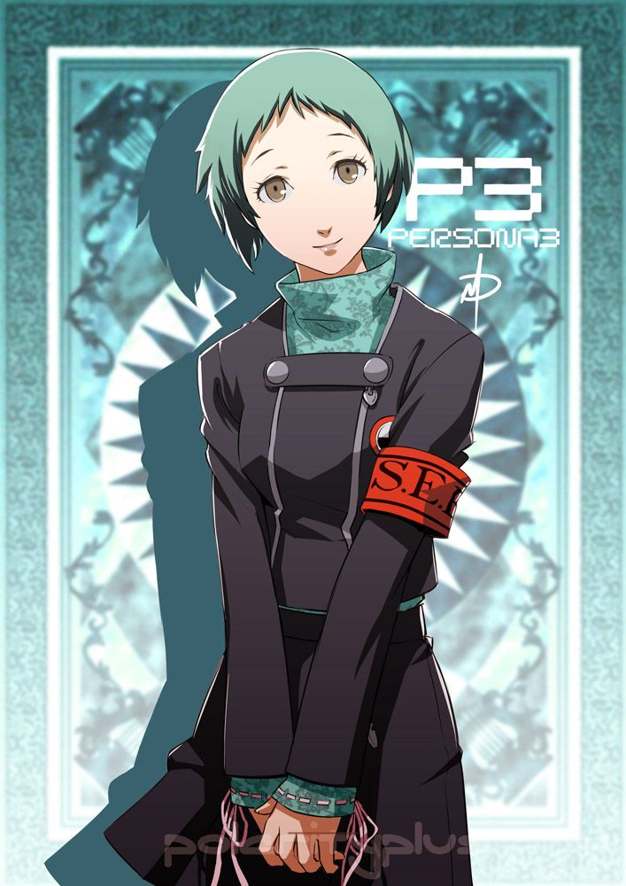

Fuuka is best girl of persona 3, and there is nothing you can say to dispute this fact.
Others may say that Aigis the Robot Bitch, or Yukari the Useless Shit, or Mitsuru the Emo Ass Bitch are better, but you are all stoopid.
To become a big brian intellectual, you must learn to accept what makes Fuuka best girl.
First off, she looks fucking adorable. Just look at the image at the top of this page, or this adorable shit.
Even her older design from P4U looks fucking adorable,
which can't be said for the others. (Aigis Doesn't count since shes a fucking robot)
She even has a bit of sex appeal, which is illustrated by this body pillow.
She isn't even a robot so it's not that creepy!
In terms of personality, she's still fucking adorable.
In the scene where she unlocks her persona, her entire motivation to do anything
is literally to protect the person, who in the past, had basically been an asshole to her
and was technically the entire reason whe was in the situation in the first place.
also worth noting is that she just shoots herself with no hesitation
unlike the inferior Yukari, she just fucking gets it.
Some people argue that Fuuka isn't as deep as the other girls, as she doesn't have any
emo backstories. Yukari has a dead dad, Mitsuru has an edgy dad that also dies, and to most, fuuka has nothing
To y'all who agree to that statement, FUCK YOU! First off, she sort of does have an emo backstory
as she states multiple times that her parents aren't exactly the best, and that she prefers to stay with
SEES in the dorm. Even then, Fuuka is good enough to stand alone as best grill without an edgy backstory.
Her social link is probably the most wholesome thing of all time, where she does what
none of the P4 grills could do, and learns how to actually make edible food.
Her motivation for this is literally to be useful to SEES, and to thank them for
letting her stay with them, and that is just fucking adorable. Through this,
You can see how much she genuinely cares about SEES, and just the people around her in general.
Just, this scene. I don't think I have to explain anything.
( ͡° ͜ʖ ͡°)
Fuuka is best girl mainly because of how adorable she is.
Her personality is extremely wholesome, and literally everything she does
is motivated by her will to make people happy. She's also not a shitty android so yeah.
This page is sponsored by ben shapiro

"Facts don't care about your feelings. Best girl does tho" -Joel Shapiro